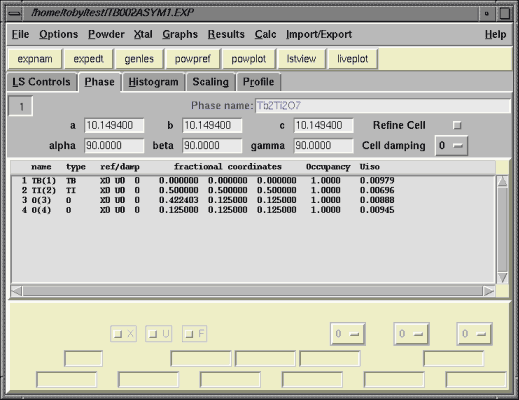

| EXPGUI home |
|---|
Intro to EXPGUI
What is EXPGUI?
EXPGUI is a graphical user interface (GUI) editor for GSAS experiment (.EXP) files and shell which allows all the other GSAS programs to be executed with a GUI. EXPGUI is not a replacement for the GSAS program EXPEDT. EXPGUI can do at best 10% of what EXPEDT can do -- but that 10% covers most of the actions that I use frequently (and that I could code without a major effort). EXPGUI is written in the Tcl/Tk scripting language, so it is largely platform independent.
Is there documentation?
Some. There is:Contributions of additional documents or improvements to existing documentation is greatly encouraged.
- A journal article (B. H. Toby, EXPGUI, a graphical user interface for GSAS, J. Appl. Cryst. (2001). 34, 210-213)
- A User's Guide (~20 web pages) complete with lots of screen images
- Installation notes for: Windows, UNIX, or Mac OS X or plunge ahead to the download links.
- Customization notes
- A well-annotated CW neutron tutorial (Alumina). A very good place to start!
- A well-annotated Lab data tutorial (Fluoroapatite). Also a good place to start!
- A TOF Tutorial Example (Nickel)
- A CW Neutron Tutorial Example (Garnet)
So what can EXPGUI do?
Phase parameters: EXPGUI can edit the cell and atomic parameters as well as the cell and atomic damping and refinement flags. Create new .EXP files, adding phases and atoms. Edit/Delete/Transform atom(s).
Histogram parameters: Scale factor, background, diffractometer constants, phase fractions, profile terms can all be changed. Least-Squares options: control the number of cycles, the print options and Fobs extraction parameters.
Edit excluded data regions and the range of data used in the fit.
So what can't EXPGUI do?
Much more than it can do. At this time, EXPGUI can't change atom types. It cannot create or edit soft constraints or many types of hard constraints (other than atomic and profile constraints). It cannot be used on magnetic scattering parameters or on single-crystal histograms. It does do most of the things that commonly used in Rietveld.New features are planned for EXPGUI, but this depends on my available free time. It should be noted that the GSAS EXPEDT program is huge, so EXPGUI will never have all the features in EXPEDT. I am glad to get suggestions for adding more functionality to EXPGUI (see the "wish list"). Coming up with ideas for intuitive GUI additions is often half the battle.
What type of computers will EXPGUI run on?
EXPGUI requires a working version of Tcl/Tk, scripting language. While that is somewhat restrictive, it still means that EXPGUI will run on many more platforms than GSAS does. Most of the development has been done in LINUX with some testing on SGI. It also runs in Windows (-95 through -XP & -2003?) and in Mac OS X. I expect that EXPGUI will run on all platforms where GSAS does (except perhaps VMS).
Where do I get EXPGUI?
See the download links web page or better yet read the installation instructions for Windows, UNIX, or Mac OS X.
Who is to blame for EXPGUI?
The initial version of the GUI part of EXPGUI was created by Jonathan Wasserman (thanks Jon!) Brian Toby is irresponsible for the rest.
EXPGUI would be much more of use to me if....
Gee, you want to add some features... Great! You have all the EXPGUI sources and Tcl/Tk is free. Oh, you want me to do it. Well, please ask and I will try. In particular, I am looking for good ideas on how to design GUI's for different aspects of experiment editing, with an attractive, intuitive and compact layout.
Mailing List
If you would like to get news about EXPGUI, please see this link. The mailing list is used only to provide information about updates and bug fixes.
A picture

Neither the author nor the U.S. Government makes any warranty, expressed or implied, or assumes any liability or responsibility for the use of this information or the software described here. Brand names cited here are used for identification purposes and do not constitute an endorsement by NIST.
| EXPGUI home |
|---|
$Revision: 1225 $ $Date: 2012-11-08 19:42:25 +0000 (Thu, 08 Nov 2012) $